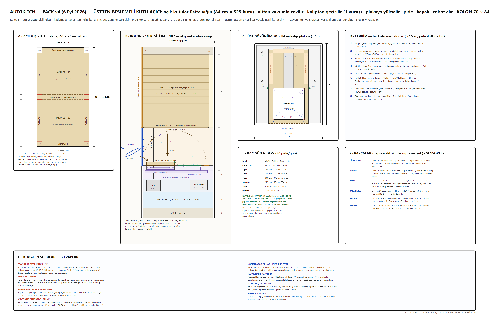

Üstten beslemeli kutu açıcı: açık kutu yığını üstte (84 cm = 525 kutu), alttan vakumla çekilir, kalıptan 1 vuruşta açılır, plakaya yükselir; pide kayar, kapak kapanır, robot alır.

| Tedarikçi / ürün | Ne | Fiyat / durum |
|---|---|---|
| Kutu üreticisi | özel bıçak kalıbı, köşe tırnaklı, baskılı | yerli oluklu mukavva |
| Vantuz + vakum pompası | 6 × Ø40 körüklü, 24 V diyafram | Schmalz / Çin |
| Lineer eksen | bilyalı vida 1605 + NEMA 23 | yerli |
| Kutu açma makinesi (referans) | Çin pnömatik pizza kutusu makinesi | video referansı |
| # | Problem | Durum | Çözüm / not |
|---|---|---|---|
| K5 | Kutular üstte, altta katlansın, 3–7 gün | ÖNERİ VAR | v4 tasarımı |
| K2 | Şarjörden kutu gelmezse / çift | ÖNERİ VAR | blank sensörü, 2. çekme, kalınlık sensörü |
| K3 | Kapak tam kapanmazsa | ÖNERİ VAR | sensör + robot pençe yedek |
| P-T1 | İtici dilimleri dağıtır | ÇÖZÜLDÜ | tepsi eğilir, kesim izli iner |
| — | Blank bıçak kalıbı · flap kapanma güvenilirliği · vantuz pilotu | AÇIK | pilot |